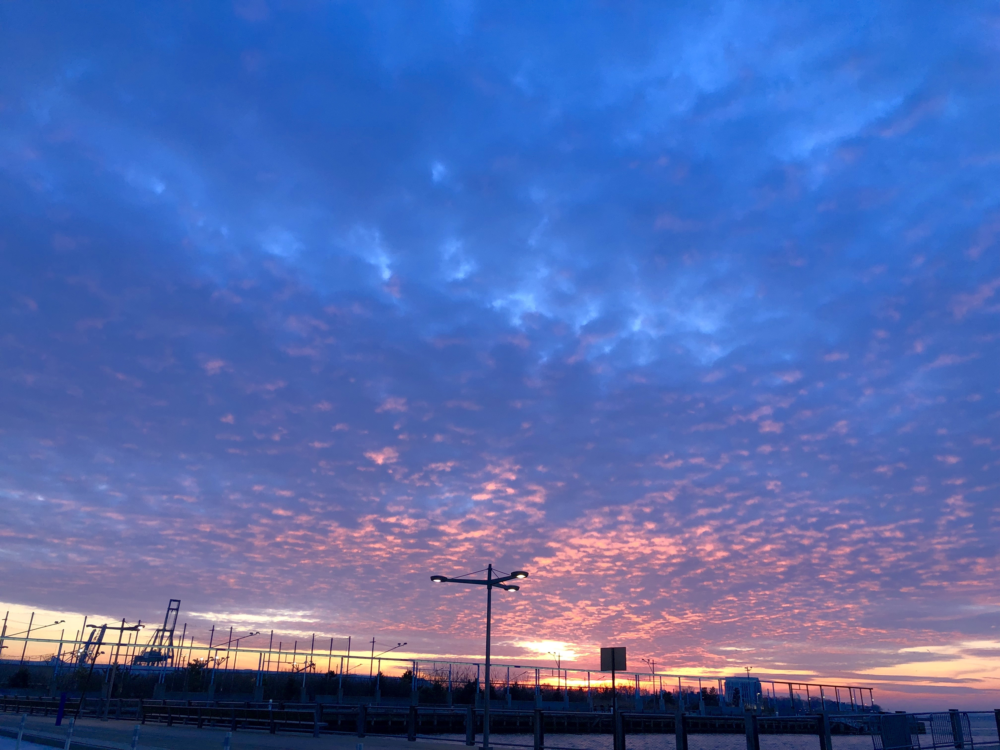
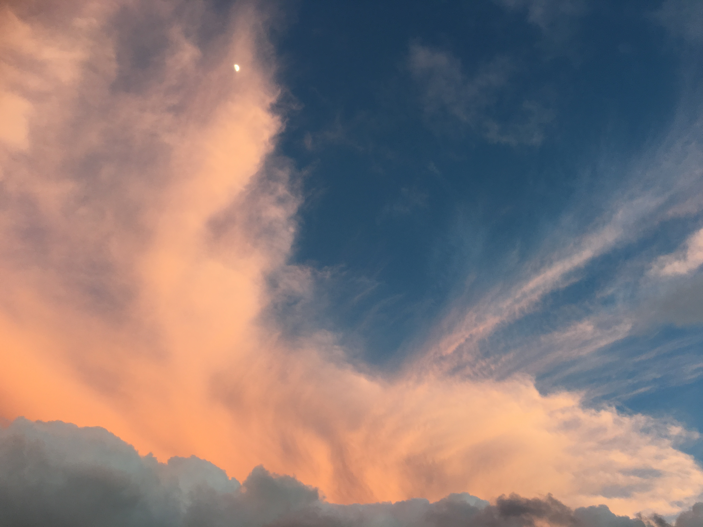
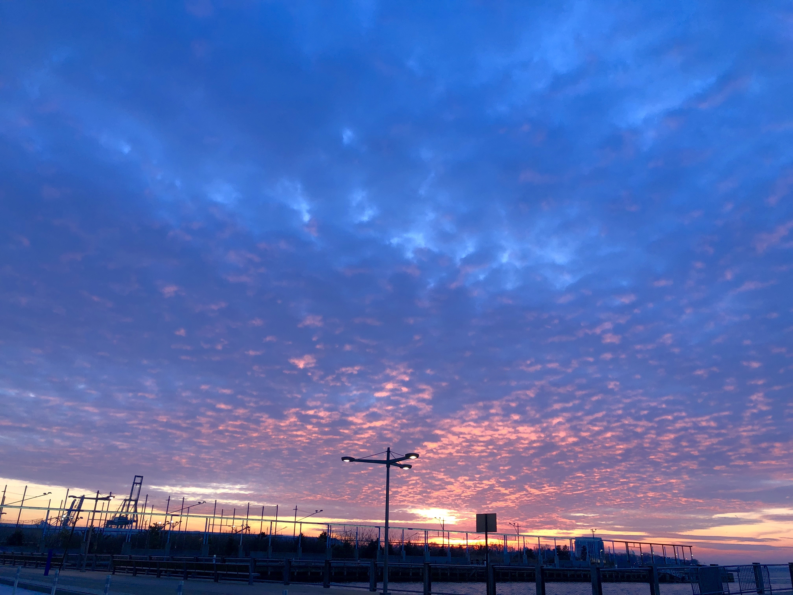
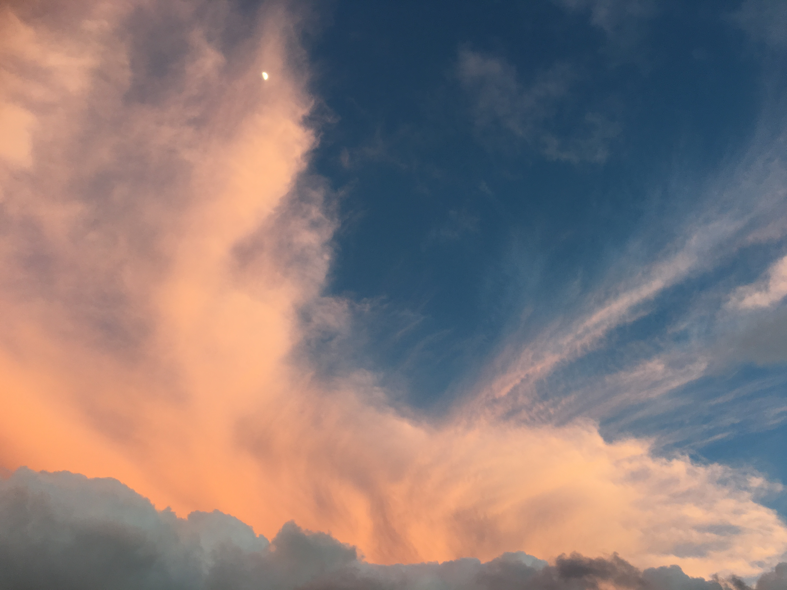
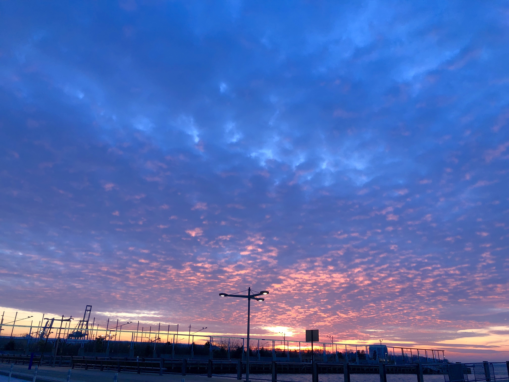
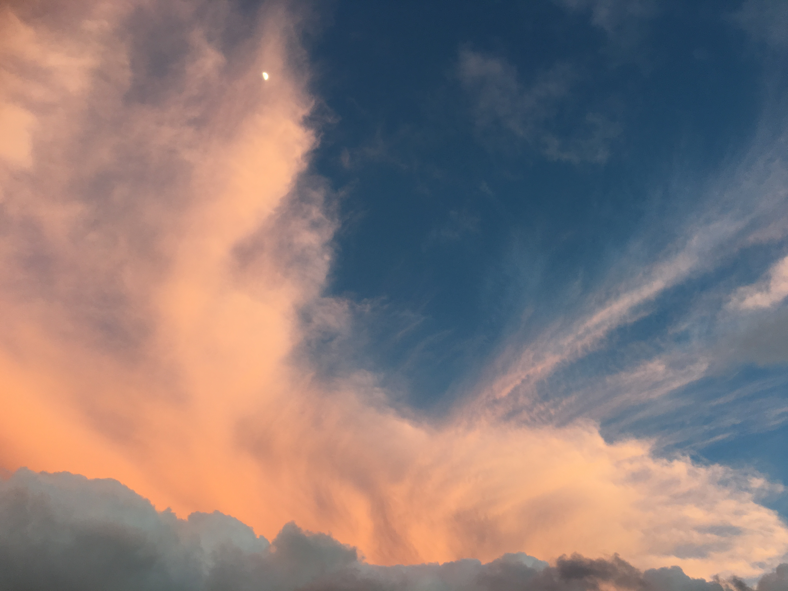
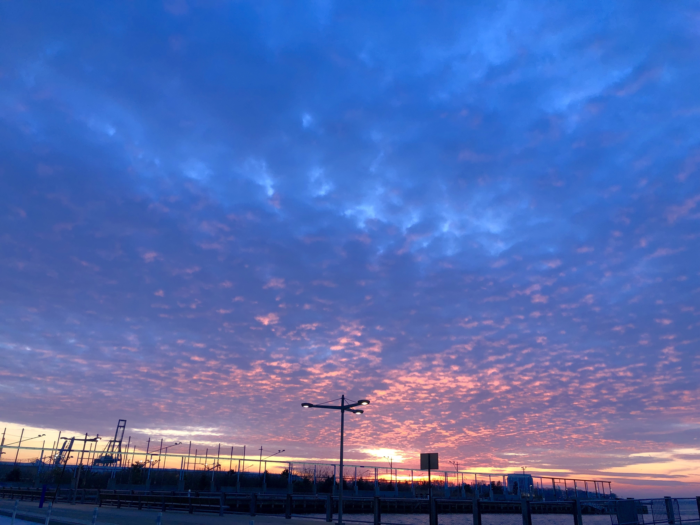
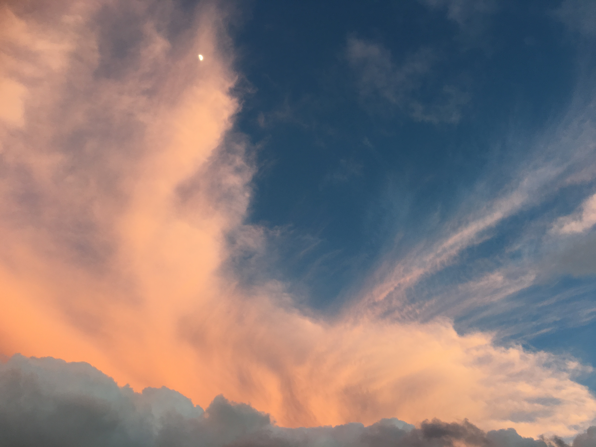

Except for direct sunlight, most of the light in the daytime sky is caused by scattering, which is dominated by a small-particle limit called Rayleigh scattering.
The scattering due to molecule-sized particles (as in air) is greater in the directions both toward and away from the source of light than it is in directions perpendicular to the incident path.
Scattering is significant for light at all visible wavelengths, but is stronger at the shorter (bluer) end of the visible spectrum, meaning that the scattered light is bluer than its source: the Sun.
The remaining direct sunlight, having lost some of its shorter-wavelength components, appears slightly less blue.
Scattering also occurs even more strongly in clouds. Individual water droplets refract white light into a set of colored rings.
If a cloud is thick enough, scattering from multiple water droplets will wash out the set of colored rings and create a washed-out white color.[clarification needed]
The sky can turn a multitude of colors such as red, orange, purple, and yellow (especially near sunset or sunrise) when the light must travel a much longer path (or optical depth) through the atmosphere.
Scattering effects also partially polarize light from the sky and are most pronounced at an angle 90° from the Sun.
Scattered light from the horizon travels through as much as 38 times the air mass as does light from the zenith, causing a blue gradient looking vivid at the zenith and pale near the horizon.
Red light is also scattered if there is enough air between the source and the observer,
causing parts of the sky to change color as the Sun rises or sets. As the air mass nears infinity, scattered daylight appears whiter and whiter.
The Sun is not the only object that may appear less blue in the atmosphere. Distant clouds or snowy mountaintops may appear yellowish.
The effect is not very obvious on clear days, but is very pronounced when clouds cover the line of sight, reducing the blue hue from scattered sunlight. At higher altitudes,
the sky tends toward darker colors since scattering is reduced due to lower air density.
An extreme example is the Moon, where no atmospheric scattering occurs, making the lunar sky black even when the Sun is visible.
Sky luminance distribution models have been recommended by the International Commission on Illumination (CIE) for the design of daylighting schemes.
Recent developments relate to "all sky models" for modelling sky luminance under weather conditions ranging from clear to overcast.
The brightness and color of the sky vary greatly over the course of a day, and the primary cause of these properties differs as well.
When the Sun is well above the horizon, direct scattering of sunlight (Rayleigh scattering) is the overwhelmingly dominant source of light.
However, during twilight, the period between sunset and night or between night and sunrise, the situation is more complex.
Green flashes and green rays are optical phenomena that occur shortly after sunset or before sunrise, when a green spot is visible above the Sun,
usually for no more than a second or two, or it may resemble a green ray shooting up from the sunset point. Green flashes are a group of phenomena that stem from different causes,
most of which occur when there is a temperature inversion (when the temperature increases with altitude rather than the normal decrease in temperature with altitude).
Green flashes may be observed from any altitude (even from an aircraft). They are usually seen above an unobstructed horizon, such as over the ocean, but are also seen above clouds and mountains.
Green flashes may also be observed at the horizon in association with the Moon and bright planets, including Venus and Jupiter.
Earth's shadow is the shadow that the planet casts through its atmosphere and into outer space.
This atmospheric phenomenon is visible during civil twilight (after sunset and before sunrise).
When the weather conditions and the observing site permit a clear view of the horizon, the shadow's fringe appears as a dark or dull bluish band just above the horizon,
in the low part of the sky opposite of the (setting or rising) Sun's direction. A related phenomenon is the Belt of Venus (or antitwilight arch),
a pinkish band that is visible above the bluish band of Earth's shadow in the same part of the sky.
No defined line divides Earth's shadow and the Belt of Venus; one colored band fades into the other in the sky.
Twilight is divided into three stages according to the Sun's depth below the horizon, measured in segments of 6°.
After sunset, the civil twilight sets in; it ends when the Sun drops more than 6° below the horizon.
This is followed by the nautical twilight, when the Sun is between 6° and 12° below the horizon (depth between −6° and −12°),
after which comes the astronomical twilight, defined as the period between −12° and −18°. When the Sun drops more than 18° below the horizon, the sky generally attains its minimum brightness.
Several sources can be identified as the source of the intrinsic brightness of the sky, namely airglow, indirect scattering of sunlight, scattering of starlight, and artificial light pollution.
The term night sky refers to the sky as seen at night. The term is usually associated with skygazing and astronomy,
with reference to views of celestial bodies such as stars, the Moon, and planets that become visible on a clear night after the Sun has set.
Natural light sources in a night sky include moonlight, starlight, and airglow, depending on location and timing.
The fact that the sky is not completely dark at night can be easily observed. Were the sky (in the absence of moon and city lights)
absolutely dark, one would not be able to see the silhouette of an object against the sky.
The night sky and studies of it have a historical place in both ancient and modern cultures. In the past, for instance,
farmers have used the state of the night sky as a calendar to determine when to plant crops.
The ancient belief in astrology is generally based on the belief that relationships between heavenly bodies influence or convey information about events on Earth.
The scientific study of the night sky and bodies observed within it, meanwhile, takes place in the science of astronomy.
Within visible-light astronomy, the visibility of celestial objects in the night sky is affected by light pollution.
The presence of the Moon in the night sky has historically hindered astronomical observation by increasing the amount of ambient lighting.
With the advent of artificial light sources, however, light pollution has been a growing problem for viewing the night sky.
Special filters and modifications to light fixtures can help to alleviate this problem, but for the best views,
both professional and amateur optical astronomers seek viewing sites located far from major urban areas.